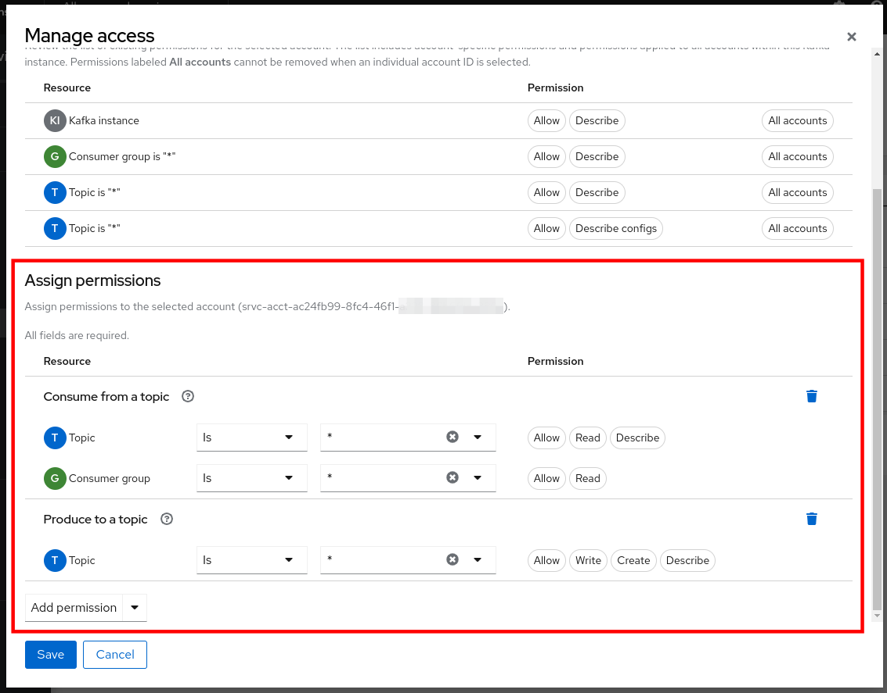
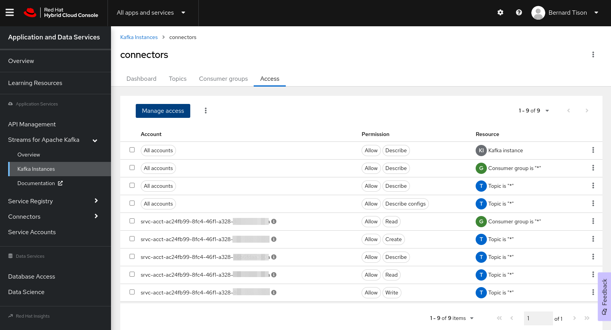

Provision a Kafka instance in OpenShift Streams for Apache Kafka
As a developer of applications and services, you can use OpenShift Streams for Apache Kafka to create and set up Kafka instances and connect your applications and services to these instances. Streams for Apache Kafka is a managed cloud service that enables you to add Kafka data-streaming functionality in your applications without having to install, configure, run, and maintain your own Kafka clusters.
In this section of the lab you provision an instance of OpenShift Streams for Apache Kafka and configure it for use with Red Hat OpenShift Connectors
Create a Red Hat account
|
Skip to the Provision a Kafka Instance section if you already have a Red Hat Account. |
You need a Red Hat account to provision a managed Kafka instance. This is how you can create one:
-
Go to console.redhat.com.
-
Click the Register for a Red Hat account link to create a Red Hat account.

Be sure to select a Personal account type.
-
Complete the registration process, opening confirmation emails if necessary.
Provision a Kafka instance in OpenShift Streams for Apache Kafka
-
Go to console.redhat.com and log in with your Red Hat account.
-
On the console.redhat.com landing page, select Application and Data Services from the menu on the left.
-
On the Application and Data Services landing page, select Streams for Apache Kafka → Kafka Instances.

-
On the Kafka Instances overview page, click the Create Kafka instance button. Enter a unique name and select the relevant Cloud region for your Kafka instance and click Create instance. This starts the provisioning process for your Kafka instance.
-
The new Kafka instance is listed in the instances table. After a couple of minutes, your instance should be marked as ready.

-
When the instance Status is Ready, you can start using the Kafka instance. You can use the Options icon (three vertical dots) to view, connect to, or delete the instance as needed.
Configure the Streams for Apache Kafka instance for use with Red Hat OpenShift Connectors
After you create a Streams for Apache Kafka instance, configure it for use with Red Hat OpenShift Connectors by performing the following tasks:
-
Create Kafka topics to store messages sent by producers (data sources) and make them available to consumers (data sinks).
-
Create service accounts that allow you to connect and authenticate your Connectors with Kafka instances.
-
Set up access rules for the service accounts that define how your Connectors can access and use the associated Kafka instance topics.
-
Create a Kafka topic for your connectors:
-
In the Application and Data Services page on console.redhat.com, select Streams for Apache Kafka > Kafka Instances.
-
Click the name of the Streams for Apache Kafka instance that you created for connectors.
-
Select the Topics tab, and then click Create topic, and follow the guided steps to define the topic details. Click Next to complete each step and click Finish to complete the setup.

-
Topic name: Type a unique name for your topic. For example, type
test-topic. -
Accept the default settings for partitions, message retention, and replicas.
-
-
-
Create a service account for your connectors:
-
In the Application and Data Services page on console.redhat.com, select Service Accounts, and then click Create service account.
-
Type a unique service account name (for example, connectors ) and then click Create.
-
Copy the generated Client ID and Client Secret to a secure location. You’ll use these credentials to configure connections to the Kafka instance.
The generated credentials are displayed only one time, so ensure that you’ve successfully and securely saved the copied credentials before closing the credentials window.
-
Select the I have copied the client ID and secret option, and then click Close.
-
-
Set the level of access for your new service account in the Access Control List (ACL) of the Kafka instance:
-
In the Application and Data Services page on console.redhat.com, select Streams for Apache Kafka > Kafka Instances.
-
Click the name of the Streams for Apache Kafka instance that you created for connectors.
-
Click the Access tab to view the current ACL for this instance.

-
Click Manage access.
-
From the Account drop-down menu, select the service account that you previously created, and then click Next.
-
Under Assign Permissions, click Add permission.
-
From the drop-down menu, select Consume from a topic. Set all resource identifiers to
isand all identifier values to"*". -
From the Add permission drop-down menu, select Produce to a topic. Set all resource identifiers to
isand all identifier values to"*".The
is "*"settings enable connectors that are configured with the service account credentials to produce and consume messages in any topic in the Kafka instance.
-
-
Click Save to add the permissions for the service account.
The ACL for your Kafka instance should look like:
Your Streams for Apache Kafka instance is now configured to be used by OpenShift Connectors.